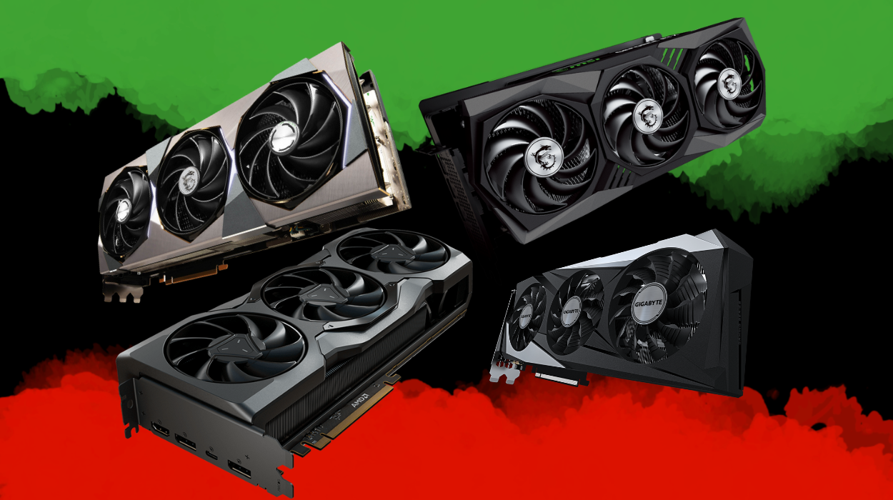
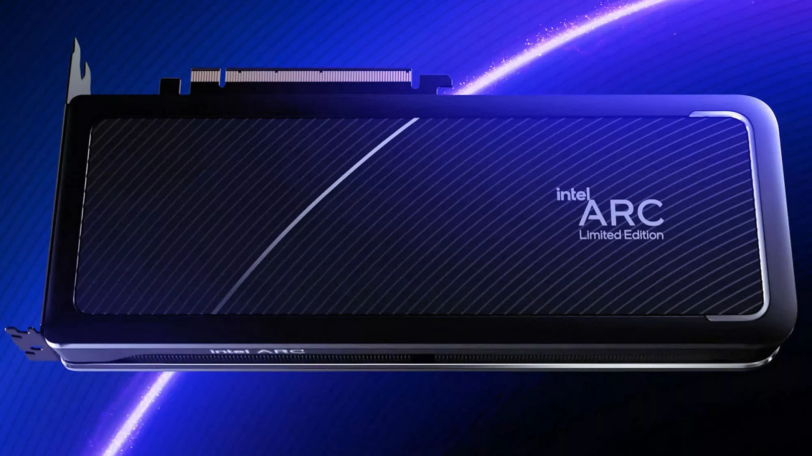

Best Graphics Card in 2025
Intel Arc B570
The best budget Graphics Card

The B570 is an excellent choice for budget-conscious gamers and professionals. It offers solid performance for 1080p gaming and can handle light content creation tasks. With its efficient architecture, the B570 provides good value for its price, making it a popular choice for those looking to build a cost-effective system without sacrificing too much performance.
Specifications:
- Graphics Cores: 16 Xe-cores
- Base Clock: 1.8 GHz
- Boost Clock: 2.15 GHz
- Memory: 8GB GDDR6
- TDP (Power): 150W
AMD Radeon 9060 XT
Best Value Graphics Card

The AMD Radeon 9060 XT is a mid-range graphics card that offers excellent performance for its price point. It is well-suited for 1080p and 1440p gaming, delivering smooth frame rates in most modern titles. The 9060 XT features AMD's RDNA 2 architecture, which provides improved efficiency and performance compared to previous generations. It also supports ray tracing and other advanced graphical features, making it a versatile choice for gamers looking for a balance between performance and cost.
Specifications:
- Stream Processors: 2048
- Base Clock: 1.5 GHz
- Boost Clock: 2.3 GHz
- Memory: 8GB / 16GB GDDR6
- TDP (Power): 160W
AMD Radeon 9070 XT
Best Overall Graphics Card

The AMD Radeon 9070 XT is a high-performance graphics card designed for gamers and content creators who demand top-tier performance. It excels in 1440p and 4K gaming, delivering high frame rates and stunning visuals in the latest titles. The 9070 XT is built on AMD's RDNA 3 architecture, which offers significant improvements in performance and power efficiency over previous generations. With support for advanced features like ray tracing and FidelityFX Super Resolution, the 9070 XT is a great choice for those looking to build a powerful gaming rig.
Specifications:
- Stream Processors: 3840
- Base Clock: 1.7 GHz
- Boost Clock: 2.5 GHz
- Memory: 16GB GDDR6
- TDP (Power): 230W